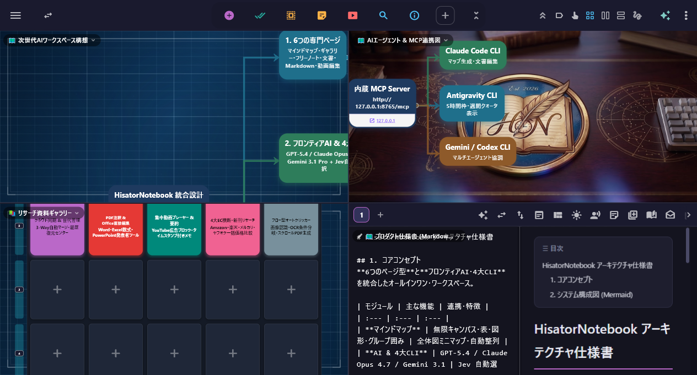
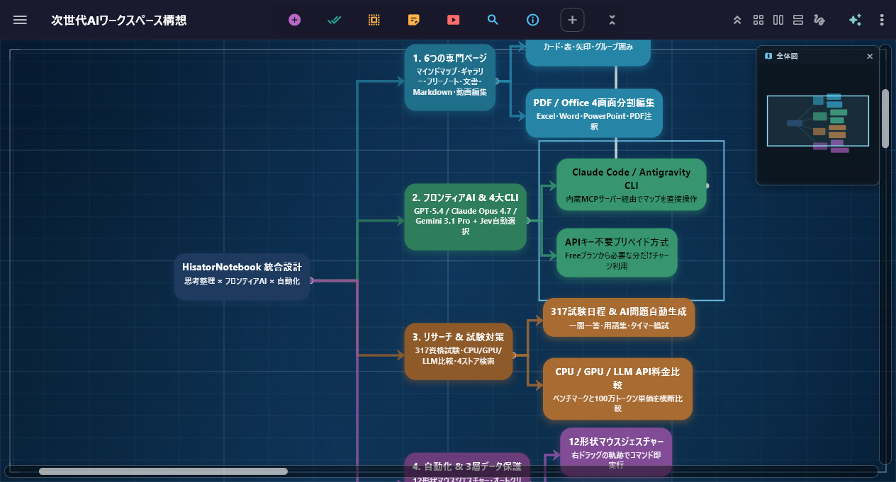
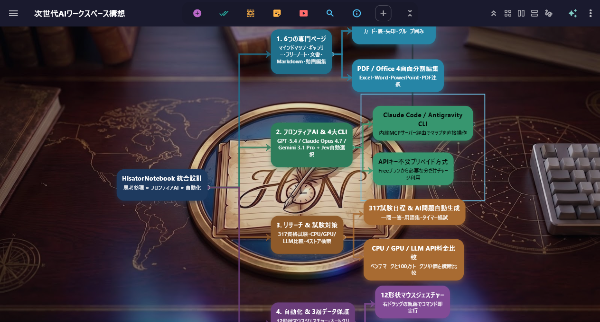
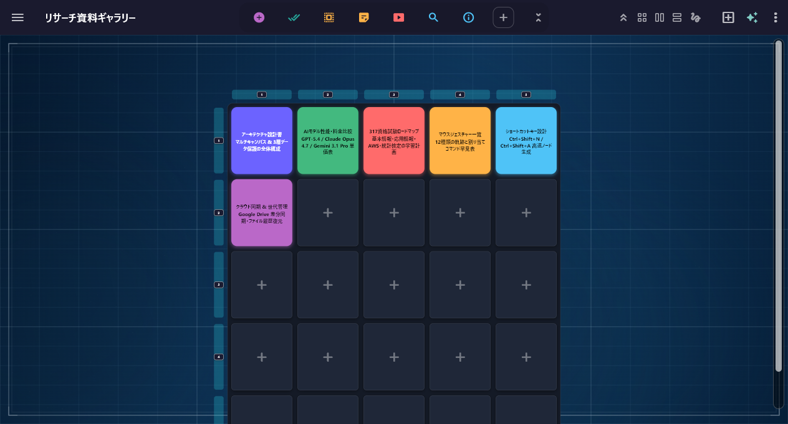
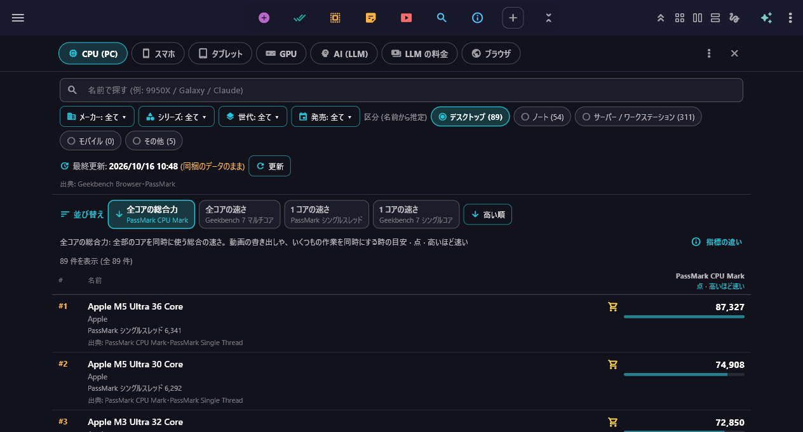
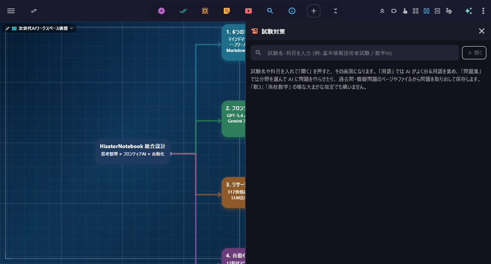

Windows 版ならではの機能
12形状マウスジェスチャー・4画面分割・4大AI CLI・自動化をデスクトップに統合
全12形状のマウスジェスチャー実演動画

4画面分割（Quad Split View）
マルチページ ＆ 画面分割実機キャプチャ
- マウスジェスチャー (全12形状)右クリックを押しながら上下左右 (4方向) やL字 (8方向) を描くだけで、ページ移動・範囲スクショ貼付・AI起動を即実行
- 画面分割 (2 / 4 分割) ＆ 小窓化マップ・ギャラリー・PDF・マークダウン・検索・AI を2分割／4分割表示・ハンドルドラッグで入れ替えや小窓化が可能
- ショートカット ＆ Ctrl+1〜9 即起動約 60 のコマンドを自由に割り当て・Ctrl+1〜9 にはよく使うページやローカルファイルを登録して瞬時に開けます
- オートクリッカー (フロー形式)クリック・文字入力・画像認識・OCR条件分岐をカードで並べて自動実行・縦長ページの自動スクロール右綴じPDF化にも対応
- PC 快適化 (マウスワープ・輝度・キーリマップ)マルチモニターのカーソルワープ＆段差補正、外部モニターのDDC/CI明るさ調整、CapsLock等のキー入れ替えに対応
マインドマップ ＆ 6つのページ
用途に合わせて6つの基本ページ型と AI スタジオを自在に使い分けられます

階層ノード × 全体図ミニマップ

グループ囲み枠 × ロードマップ整理

ギャラリー × 2次元グリッド管理
- マインドマップ画像・動画・PDF・表・数式を格納・自動整列・集中モード・プレゼン・3D地球儀ビューに対応
- ギャラリー (本棚)動画・PDF・画像をタイルに並べる2次元グリッド・タグ絞り込みや連続再生に対応
- フリーノート ＆ 文書手書きペン・図形・付箋の自由キャンバスと、アウトライン目次付きのリッチ文書ページ
- マークダウン ＆ 動画編集最大4分割のマークダウン（Mermaid・LaTeX・差分比較）と、タイムライン動画編集・AIスライド生成
AI ＆ 4大 AI CLI 統合
APIキー不要のプリペイド方式と、4大 AI CLI・内蔵 MCP サーバーに対応
- API キー不要のプリペイド AI$10 チャージで使った分だけ消費・ChatGPT / Gemini / Claude をAPIキー不要で直ぐに利用できます
- 4大 AI CLI ＆ MCP サーバー内蔵Claude Code / Codex / Gemini / Antigravity CLI を直接起動し、現在のマップや資料を自動編集（Ctrl+Z対応）
- マップ自動生成・暗記カード・会話練習テーマや長文PDFからのマップ・問題集・暗記カード生成と、音声対応のAI面接・語学練習を搭載
動画・PDF・Office 文書・無音カメラ
外部ソフト無しで、視聴・書き込み・直接編集が全てアプリ内で完結
- 広告無し YouTube ＆ 動画・音楽再生広告非表示・尺フィルター付きの YouTube 集中視聴と、PiP小窓・プレイリスト対応の動画＆音楽プレーヤー
- PDF 直接書き込み ＆ Office 3形式編集PDFへのペン直接焼き込み保存と、Word (.docx)・Excel (.xlsx 数式対応)・PowerPoint (.pptx) の直接編集
- 無音カメラ (写真・動画) ＆ OCRシャッター音無しで写真・動画を撮影し、その場で OCR 文字起こし＆QR読取
情報収集・性能比較・試験対策・データ保護
検索・トレンド・雑学・ベンチマーク比較・317資格試験対策・3段階データ保護を集約

CPU・GPU・スマホ・LLM 性能＆料金比較

マップの隣で開く AI「試験対策」
マルチ画面分割＆リサーチ実機デモ動画
- 検索・トレンド・雑学・4大EC商品検索2画面Google検索、9分野トレンド、出典明記の雑学、Amazon/楽天/メルカリ/ヤフオク横断検索
- 性能比較 ＆ 317資格試験・AI試験対策CPU/GPU/スマホ/LLM性能＆料金比較と、317試験日程・AIによる用語収集＆問題生成
- 3段階データ保護 ＆ 3-Wayクラウド同期1文字ごとの自動保存・Windows「ごみ箱」退避・復元センターと、競合しない3-Way同期・共同編集（Max）